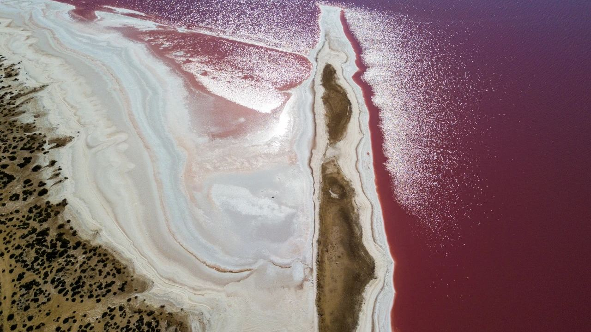
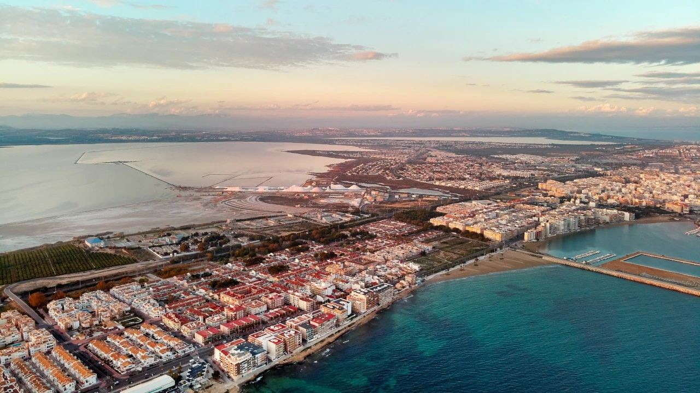
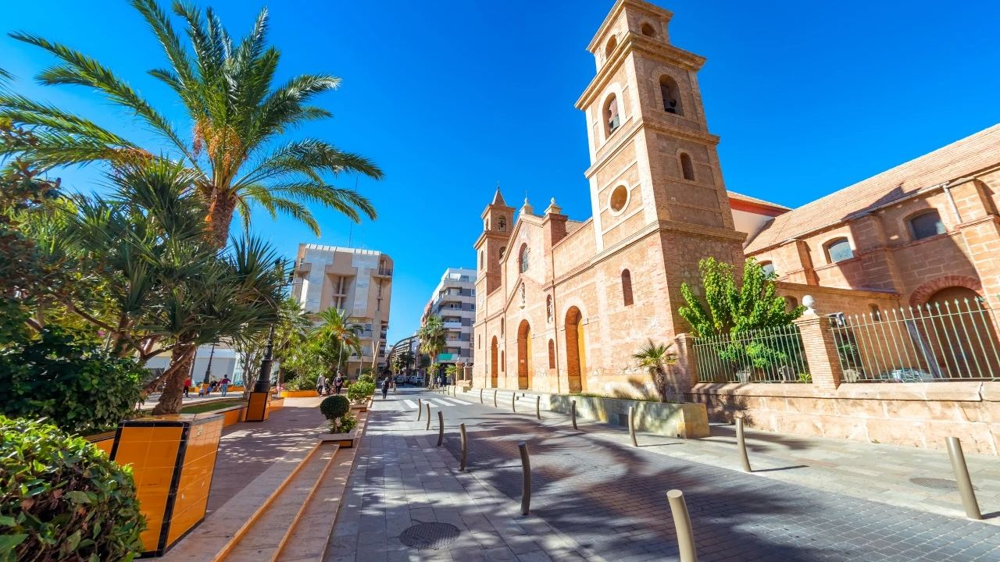
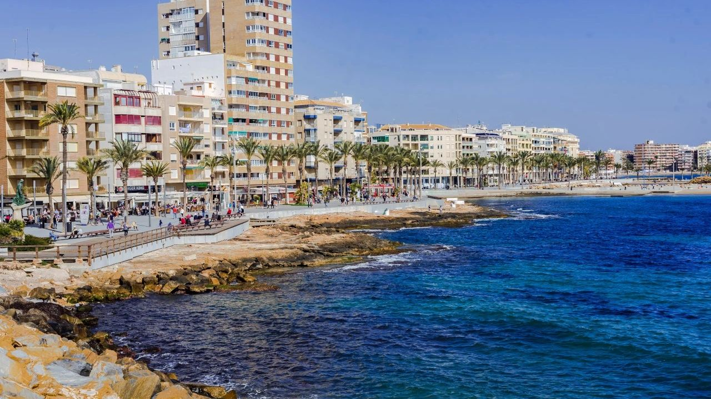
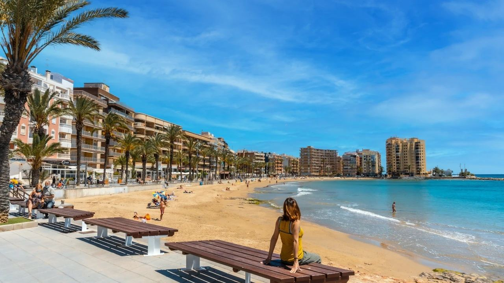

Places · Costa Blanca
Torrevieja: What to See and the Best Attractions
 By Lucyna Gacek · · updated · 3 min read
By Lucyna Gacek · · updated · 3 min read

In short: Torrevieja is a coastal city of about 90,000 people in the south of the Costa Blanca, around 45 km from Alicante airport. Its best-known sight is the pink salt lake, part of the La Mata and Torrevieja lagoons natural park, where flamingos feed. Also worth seeing are the seafront promenades, the Museum of the Sea and Salt, the S-61 Delfín submarine in the port, the Habaneras festival in summer, and around 20 km of coast with beaches such as El Cura, Los Locos, Los Náufragos and La Mata.
Torrevieja grew from a small fishing and salt village into one of the largest towns on the coast. It is lively all year, with a big international community, good shops and services, and some of the most affordable homes by the sea on the Costa Blanca.
Here is what to see, the best beaches and some practical tips for getting there and getting around.
Location, climate and a little history

The city lies between the sea and two large salt lagoons, La Mata and Torrevieja. It is one of the driest and sunniest places in Spain: winter days are usually around 17 °C and summer highs about 30–31 °C. The name means "old tower", after a watchtower that once stood on the coast. In 1829 a strong earthquake destroyed most of the town, which was then rebuilt on a grid of straight streets. Salt has been produced here for centuries, and the salt works are still among the largest in Europe.
The pink lake and La Mata natural park
The Torrevieja lagoon turns pink because of salt-loving microalgae and tiny shrimp, and the colour is strongest on sunny, still days. Bathing is not allowed in the main lake, but there are viewpoints and paths around it. The quieter La Mata lagoon has a visitor centre, walking and cycling routes and bird hides, where you can see flamingos, avocets and other waterbirds for much of the year.
The town centre and museums

- Iglesia de la Inmaculada Concepción – the main church, rebuilt after the earthquake, on the central square.
- Museum of the Sea and Salt – the history of the salt works, fishing and the town.
- S-61 Delfín submarine – a decommissioned Spanish Navy submarine you can go inside, moored in the port next to a historic patrol boat.
- Habaneras festival – every summer, choirs from around the world compete with sea songs brought back from Cuba.
The seafront

Torrevieja is a city for walking along the sea. The Juan Aparicio promenade runs past rocky coves and natural sea pools, the statue of La Bella Lola waits for the sailors to return, and the long Levante breakwater is a favourite place for an evening walk. The port has a marina, restaurants and a weekly market nearby.
The best beaches

- Playa del Cura – the central beach, golden sand and a lively promenade.
- Playa de Los Locos – a sheltered family beach with a promenade above.
- Playa de Los Náufragos – near the port, with beach volleyball.
- Playa de La Mata – over 2 km of sand next to the natural park, quieter and more natural.
- Cala Ferris and Punta Prima – towards Orihuela Costa, smaller and calmer.
Getting there and around
Alicante airport is about 45 km north, around 40 minutes by car on the CV-91/AP-7 or N-332. There are direct buses from the airport and from Alicante (about 1 hour to 1 hour 30). Murcia's Región de Murcia airport is about 55 minutes south. In town, local buses link the centre with the outlying neighbourhoods, but most residents also use a car.
Where to live
Most buyers choose between apartments in the centre near Playa del Cura and Los Locos, quieter residential areas such as La Mata and Aguas Nuevas, or villas and townhouses on the edge of town and in nearby Ciudad Quesada. Compare prices in our Torrevieja property market guide and see our homes for sale in Torrevieja.
Frequently asked questions
Why is the lake in Torrevieja pink?
Because of microalgae and tiny brine shrimp that live in very salty water. The colour is strongest on sunny, calm days.
Can you swim in the pink lake in Torrevieja?
Bathing in the main lagoon is not allowed, as it is a protected natural park and a working salt lake. You can walk around it and use the viewpoints.
How far is Torrevieja from Alicante airport?
About 45 km, around 40 minutes by car. Direct buses take about 1 hour to 1 hour 30 minutes.
What is the best beach in Torrevieja?
Playa del Cura is the most central and popular. La Mata is the longest and quietest.
Living by the salt lakes
Sunshine, sea, salt lakes and affordable prices make Torrevieja one of the most popular places to buy on the coast. Get in touch and we will help you find the right street and the right home.
Sources: Torrevieja Tourist Office · Generalitat Valenciana – Parque Natural de las Lagunas de La Mata y Torrevieja · AEMET – Spanish weather agency